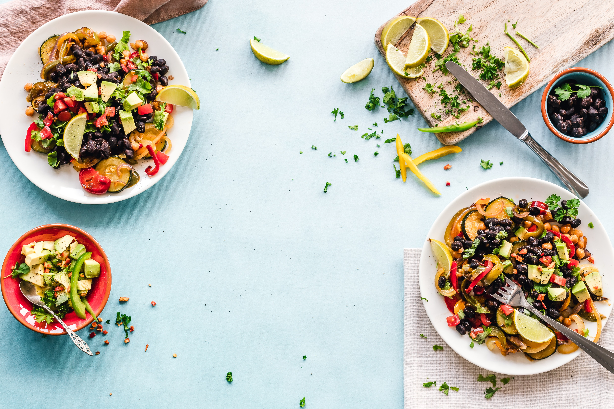
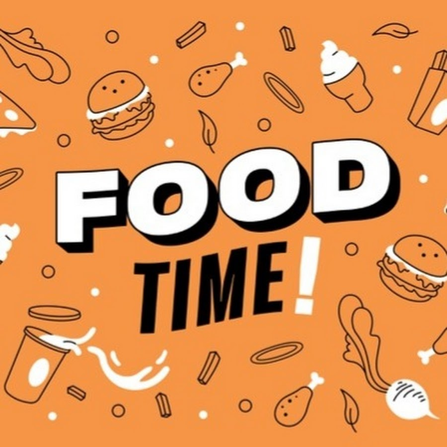

Project: Advertisement Template using Articles
Description: This project involved the creation of a dynamic advertisement template using articles. The goal was to design a flexible and reusable template that can be easily customized for different advertisements.
 Visit Project
Visit Project
Project: E-commerce Web App
Description: This project involved the development of a robust and user-friendly e-commerce web application. The goal was to create an intuitive online shopping experience for customers, while providing a comprehensive platform for managing products, orders, and user accounts.
 Visit Project
Visit Project
Project: Metro Line Attractions Application
Description: The Metro Line Attractions application was designed to provide users with a convenient and informative way to explore attractions located near metro line stations. The objective was to create an intuitive and visually appealing interface that allows users to discover interesting places to visit in proximity to each station along the metro line.
 Visit Project
Visit Project
Project: Company Product Advertisement Website with Scrollbar Animation
Description: The Company Product Advertisement website was created as a promotional platform to showcase and highlight the products offered by a specific company through articles. The main objective of this project was to create an engaging and visually appealing website that effectively presents the company's products through articles and captivates the audience. The website featured a unique scrollbar animation that enhanced the user experience and added an interactive element to the browsing process.
 Visit ProjectProject: Company Product Advertisement Website with Marquee Animation
Description: The Company Product Advertisement website was developed as a platform to promote and showcase the products of a specific company. The main objective of this project was to create a visually appealing and informative website that effectively highlighted the company's products through engaging articles. The website featured a unique marquee animation at the bottom, adding an eye-catching element to the overall design.
 Visit Project
Visit Project
Project: FoodTime - Restaurant Reservation Application
Description: FoodTime is a dynamic and user-friendly web application designed to simplify the process of finding and making reservations at restaurants. The goal of this project was to create a convenient platform that allows users to browse and discover restaurants based on their location and food preferences, ultimately enhancing their dining experience.
 Visit Project